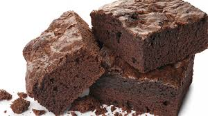

Brownies
TikTok Brownies

Ingredients
- 1/2 cup unsalted butter, plus additional for greasing pan
- 1/3 cup cocoa powder
- 1 cup granulated sugar
- 2 teaspoons vanilla extract
- 2 large eggs
- 1/2 cup all-purpose flour
Directions
-
Heat oven to 350 degrees F (175 degrees C). Coat an 8x8-inch metal
baking dish with butter.
-
Melt butter in a large saucepan over low heat. Remove from heat and let
cool for 5 minutes. Whisk in cocoa powder, sugar, and vanilla extract.
Stir in eggs, 1 at a time until incorporated. Add flour and stir until
just combined. Scrape mixture into the prepared pan and smooth the top.
-
Bake in the preheated oven until a toothpick inserted comes out clean,
20 to 25 minutes.
-
Remove from the oven and cool on a wire rack for at least 45 minutes
before cutting.
Home Page